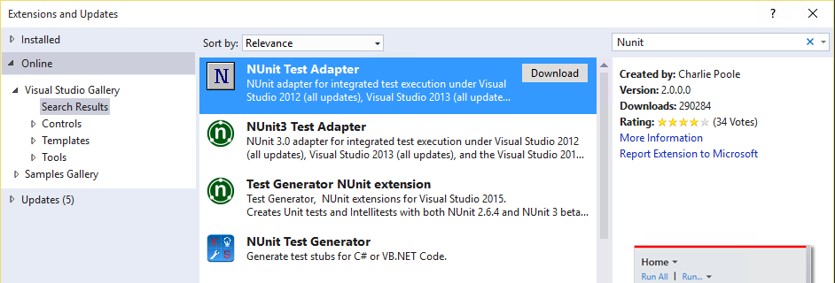

Duration
10 minutes
Goals
The primary goal of this exercise will be to take an existing set of UITests built against either an iOS or Android version of TaskyPro and deploy them to a local device connected to your development system.
Required Assets
There is a testing solution we will use to run our tests in the Exercise 1 folder named TaskyPro.sln. These are the same tests you worked with in XTC102 to work with Xamarin.UITest. They've been updated slightly to add WaitForElement timing statements so they will run properly on devices.
Steps
Select the IDE environment you want to work with: Visual Studio for Mac, Visual Studio on Windows, or Command Line
Turn on accessibility (iOS only)
If you are using an iOS device, first, make sure it's registered with the Apple developer portal (you must be able to deploy local apps to the device). There's a Lightning Lecture on Deploying to iOS devices you can watch to set this up.
Next, open the Settings.app on the device and scroll down until you find the Developer settings. Tap that and make sure that the Enable UI Automation flag is turned on.
Build the solution
Let's start by opening the project.
- Open the TaskyPro.sln solution in the Exercise 1 folder.
- Update the Nuget packages in the entire solution by right-clicking on the solution node and selecting "Update Nuget packages".
- Build the solution to make sure it all builds properly.
Deploying to a device from Visual Studio for Mac
With Visual Studio for Mac, you will be able to deploy your UI tests directly to the device from the Unit Tests pad.
- Plug a physical device into the system using the USB cable - either iOS or Android.
-
There are two ways to select the device you want to run on:
- You can make the specific test application the active project, select the device from the build configuration in the toolbar, and then run the tests from the Unit Test Pad.
-
Or you can open the Tests.cs source file in the UITests project - at the top of the class you will find two
[TestFixture]attributes. Comment out the one you do not intend to test on. You can then select the specific device from the Test Apps node in the Unit Test Pad and run the Unit test project directly from the IDE.
- Let's use the first approach - it's the most versatile. Open the Unit Test Pad (if it's not visible, you can use View > Pads > Unit Tests). Expand the UITests, they should already be associated to the two platform specific projects as shown here:
- If you do not see an association, or want to change it, then right-click the Test Apps node and select Add App Project to associate an application with the tests.
- Next, make the UITests project the active project (right-click and select Set as Startup Project).
- Change your build environment to be Debug with a device - for example, for iOS, you need to select Debug - iPhone. Remember that you must use a DEBUG configuration for iOS since that's when the test agent is compiled into the app. For Android, you can just select DEBUG.
-
Select the device you want to test on.
- Expand the Test Apps node in the Unit Tests Pad, right click on the app you want to test (either iOS or Android) and select the physical device from the list.
- If you don't see any devices, make sure your build configuration is set properly and that you have a device plugged in.
- Make sure your device is unlocked. The tests will not run if the device is locked.
- Run the project by clicking the Play button in the toolbar - this will execute all the tests in the project on the selected device. The app should deploy to your device, run the tests and all should pass.

Build the solution
Let's start by opening the project we will be using in Visual Studio.
- Open the TaskyPro.sln solution in the Exercise 1 folder.
- Update the Nuget packages in the entire solution by right-clicking on the solution node and selecting "Manage Nuget packages for Solution" in Visual Studio. This will open the Nuget Manager.
- If you get a bar across the top indicating the solution needs to restore packages, dismiss that and restore the existing dependencies.
- Next, change the Filter combo box to be "Upgrade available".
- If any components are listed, then go through each one and update to the latest stable release.
- Build the solution to make sure it all builds properly.
Deploying to a device from Visual Studio
Visual Studio supports deploying to Android devices and running UI tests, however you must have NUnit installed along with the proper extension. If you want to test iOS devices, you will need to use Visual Studio for Mac, or a Mac with a command-line approach.
- Make sure you have NUnit installed, and that you have an extension for Visual Studio to run NUnit-based unit tests from the IDE. You can use the free test adapter from Charlie Poole (author of NUnit):  or a paid extension such as ReSharper which provides different testing adapters.
- By default, UI Tests run on simulators/emulators. To get it to run on a device, we need to identify the device to run on. Make sure your Android device is plugged into your computer.
- Use the Tools > Android > Android Adb Command Prompt... option in Visual Studio to open a command prompt for Android (ADB).
-
Type
adb devices. This should report the unique device id of your device. If it says the device is "unauthorized", then check the device and make sure it doesn't have an authorization prompt - this sometimes happens the first time you plug in a device into a computer for USB debugging. - Copy down the unique device identifier.
- Switch back to Visual Studio and open the AppInitializer.cs file.
-
Add a call to the
DeviceSerial("xxx")method in the configuration chain, where "xxx" is the device identifier you copied down. This will identify the device to run on. - Next, install and run the application on your device by selecting the device in the toolbar and clicking the Play button. Since there is no support to identify a specific project in the solution to use as the system under test, we will just identify an installed app.
-
Now that the app is installed, modify the configuration chain to use the
InstalledApp("com.xamarin.samples.taskydroid")method to identify the application using the package id. Note: if you have changed the bundle id, make sure to update it here! - Rebuild the solution to make sure it's all up to date with the device information coded into the configuration. Make sure to use Rebuild All because not all of the projects have direct dependencies so the IDE doesn't know to compile everything. Now we are ready to run the tests.
- Open the Test Explorer window through the Test > Windows > Test Explorer menu option.
- It should list all the tests and you can click the "Run All" link to execute them. If you don't see any tests, make sure you've rebuilt the project and that you have an NUnit test adapter installed.


Turn on accessibility (iOS only)
If you are using an iOS device, first, make sure it's registered with the Apple developer portal (you must be able to deploy local apps to the device). There's a Lightning Lecture on Deploying to iOS devices you can watch to set this up.
Next, open the Settings.app on the device and scroll down until you find the Developer settings. Tap that and make sure that the Enable UI Automation flag is turned on.
Build the solution
Let's start by opening the project we will be using in your IDE.
- Open the TaskyPro.sln solution in the Exercise 1 folder.
- Update the Nuget packages in the entire solution by right-clicking on the solution node and selecting "Update Nuget packages" in Visual Studio for Mac, or "Manage Nuget Packages for Solution" in Visual Studio - check the specific IDE instructions by switching to each one if you need help with this task.
- Build the solution to make sure it all builds properly.
Deploying to a device from the command line
Another way we can run on local devices is through the command line. You can use the command line approach on either macOS or Windows.
- Make sure your device is plugged into your computer.
-
Open a command line or terminal prompt. Our first step is to identify the device we want to run on.
-
For iOS (Mac only):
xcrun instruments -s devices. -
For Android:
adb devices.
-
For iOS (Mac only):
- Copy down the unique device identifier from the output.
- Switch to your IDE - it should still have TaskyPro loaded.
-
Open the AppInitializer.cs file and add in the appropriate method call to the configuration chain to identify the device to run on:
- Android:
DeviceSerial("xxxx") - iOS:
DeviceIdentifier("xxxx")
- Android:
-
Next, change the destination target in the IDE's toolbar to be the physical device and run the application once to get it installed onto the device. Then, modify the configuration change to use the
InstalledApp("....")method to identify the application using either the package id, or the bundle id:- Android:
com.xamarin.samples.taskydroid - iOS:
com.xamarin.taskypro
- Android:
- Rebuild the solution to make sure it's all current (make sure to use Rebuild All because not all of the projects have direct dependencies so the IDE doesn't know to compile everything). With the device information coded into the configuration, you can then run the unit test from Visual Studio, or from the command line. Since the command line is a new approach, let's try that.
- If you do not have NUnit installed, download it from www.nunit.org for your platform.
- Make sure your device is unlocked.
-
Switch to your command line prompt, and use nunit-console.exe application to run your unit tests - the easiest way to do this is to make sure NUnit is in your path (or fully specify the path) and then pass it the DLL with the UITests as the single parameter. You will need to use
Monoto run it on macOS, on Windows, you can execute it directly.
$ mono ~/NUnit-2.6.4/bin/nunit-console.exe TaskyUITests.dll
Using default runtime: v4.0.30319
NUnit-Console version 2.6.4.14350
Copyright (C) 2002-2012 Charlie Poole.
Copyright (C) 2002-2004 James W. Newkirk, Michael C. Two, Alexei A. Vorontsov.
Copyright (C) 2000-2002 Philip Craig.
All Rights Reserved.
Android test running Xamarin.UITest version: 0.7.2
Running activated version with api key from /Users/mark/xtc-api-key
Initializing Android app on device 05845172 with installed app: com.xamarin.samples.taskydroid
Skipping local screenshots. Can be enabled with EnableScreenshots() when configuring app.
Skipping app data clear for installed app.
Signing apk with Xamarin keystore.
Skipping installation: Already installed.
Using element matching Marked("Add Task").
Tapping coordinates [ 1095, 106 ].
Using element matching Class("EditText").Index(0).
Tapping coordinates [ 600, 250 ].
Using element matching Class("EditText").Index(1).
...
Summary
Congratulations, you have successfully run your UI tests on a locally connected device.